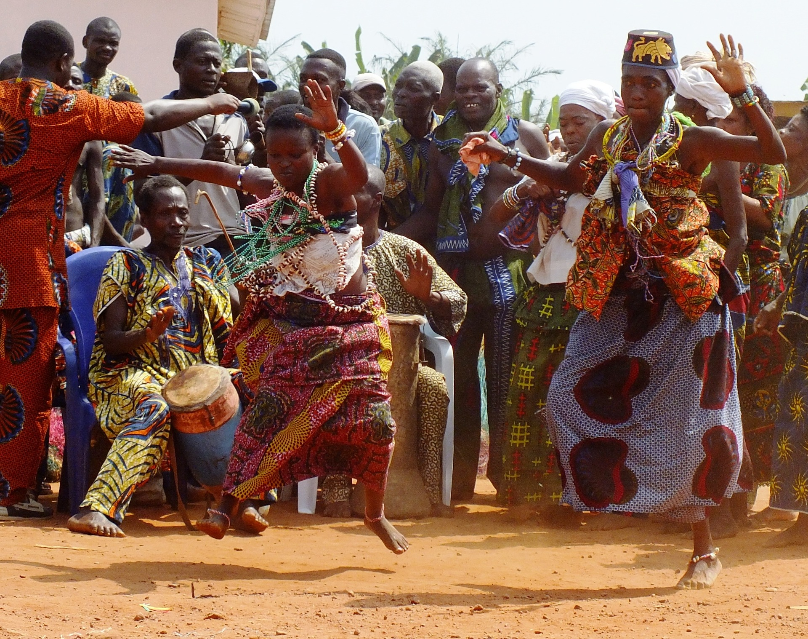
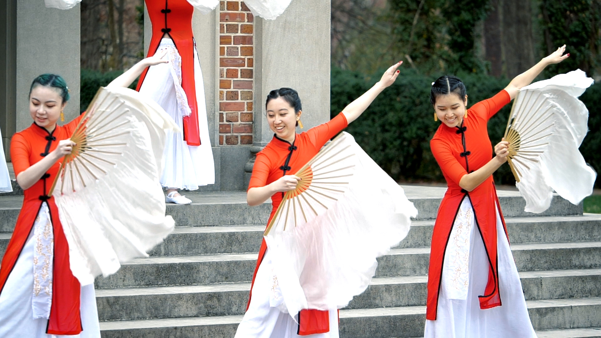
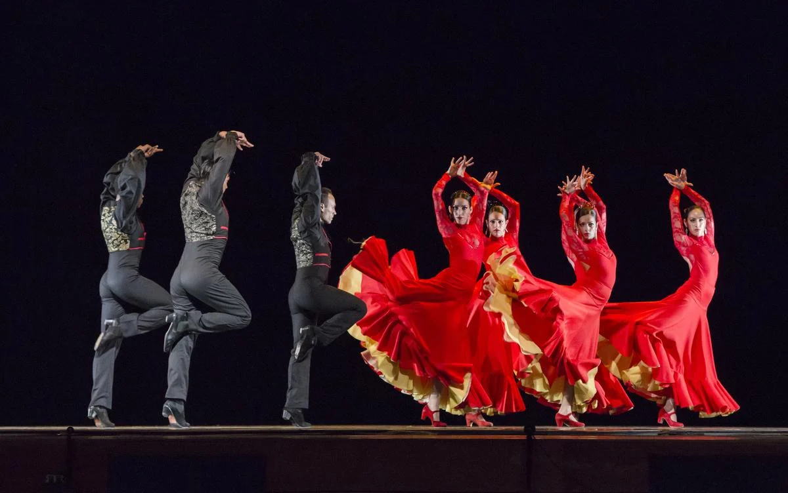
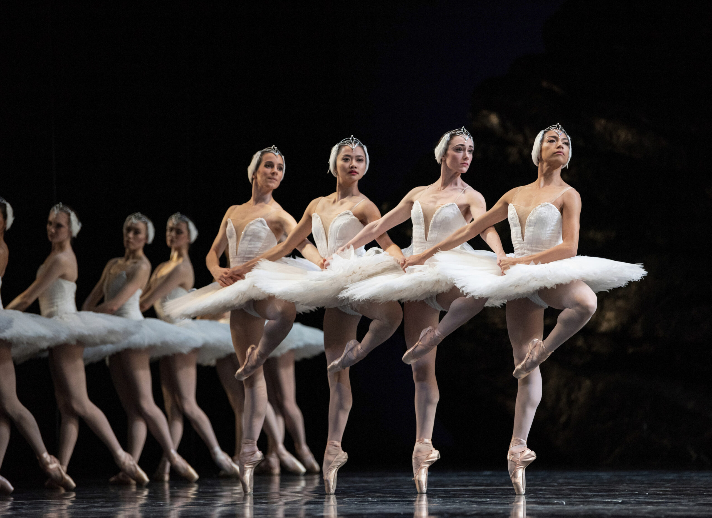
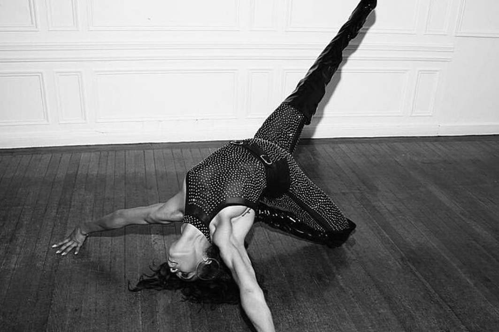

Tell me MORE about Dance ⤵
Dance is the unspoken language of the body. It tells stories, conveys meaning, and carries history through the generations by moving the body in a rhythmic way. Whether used for social, communal, competitive, or sacred practices, dance has been used as a vehicle for expression for tens of thousands of years.
Universal Expression of Movement, Emotion and History
Africa
Dance has always been an indispensable element of life in African society, binding together communities and helping individuals understand their roles within their communities. The unique characteristics of ancient African dance encompass spirituality in repetition, drumming, and polyrhythmic movement. Spiritual and coming-of-age rituals are present in many African cultures as dance helps members of their community understand and connect to their higher power. Some of the more popular African dances in Westernized societies include South Africa's Zulu tribes' Agbadza Dance, Gombey Dance, Mbira Dance, and Gwara Gwara African Dance. African dance has a rich and complex history that directly reflects the beauty of the immense diversity of the continent itself.
Asia
Dance throughout Asia has a rich history, dating as far back as the Neolithic period. The Chinese culture has some of the earliest forms of documented dance history in spiritual and ceremonial practices. These dances expressed gratitude to the gods and ancestors, prayed for good harvests, and celebrated life events. Over time, Chinese dance evolved into a sophisticated art form with unique styles and techniques. Traditional dances today have shifted from the community to the theatre. The resulting dance dramas and masked dance mimes of Thailand, Cambodia, and Java are famous for their grandiose scale and elegance in overall execution.
Latin America
The earliest roots of Latin American dance came from indigenous societies like the Aztecs, Guarani, Aymara, Incas, and Tehuelches. In Aztec communities, dance played a part in sacrificial ceremonies to ornate the delivery of gifts to the gods. Fast forward a few centuries to modern-day, and Latin American dance has influenced popular music and culture around the globe for decades. Latin dance has helped shape how people think about movement and has played an important role in Latin American societies for centuries. Dance has been a part of celebratory religious festivals and ceremonial events such as weddings and funerals, as well as to document, express, and translate stories of their people. Whether it's the fiery rhythms of the salsa and tango or the smooth styles of bolero and the exciting spectacle of the cha-cha, Latin dance continues to captivate audiences all over the world as well.
Europe
Europe is most famously known as the birthplace of ballet. Ballet was formed during the Italian Renaissance courts of the 15th and 16th centuries, before spreading to the French, where many people believe ballet orgininated. In the 17th century, King Henry XIV of France further shaped and codified ballet by documenting dance on paper and introducing social dances from paegan traditions in tandem with music, speech, song, decorum and costume. Today ballet has spread to almost every continent around the globe and has affected and influenced change in other dance forms due to colonization.
North America
North American dance history is diverse and includes a range of traditons from indigenous tribal dances to Western and African influenced social, performance and concert dance forms. Indigenous communities from around North America each had their own traditional dances to celebrate rites of passage, spirtual events, festivities, and the supernatural. These are the originating dances of this contentent.
Due to the events of colonization, the Westernized dance forms of ballet and other pagan genres transferred over to the new land. To be popular with the masses, White Americans had to change some traditions and adapt (technically steal) to keep current and acquire a new audience. In the post-Civil War and pre-Civil Right's Movement era, there was a boom in African/Black American art, music, dance, and much more. The blues and jazz music movement of the late 19th to early 20th century lead to the creation of Jazz, Tap, and Modern dance. As the times changed, so did the art of music and dance. Disco and Hip-hop music lead to the direct creation of their dance styles. Drag Queens evolved modern house dancing into a highly stylized dance form called Vouging. Had it not been for African/Black American art, all popular culture/mainstream art forms would not be what it is today.